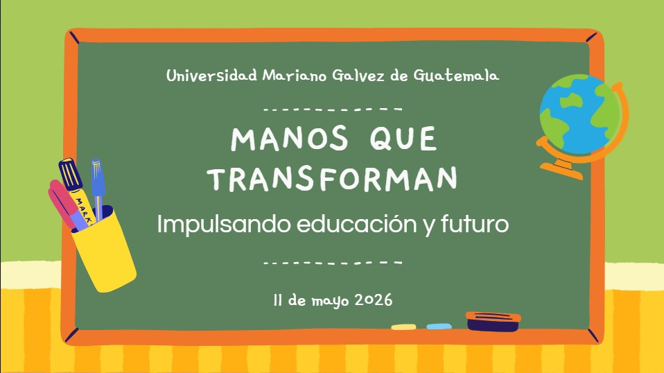
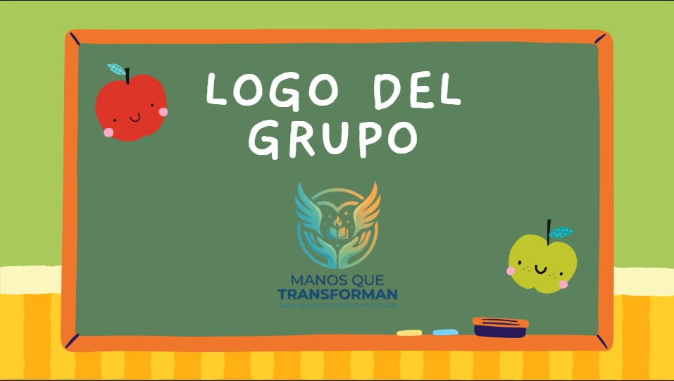
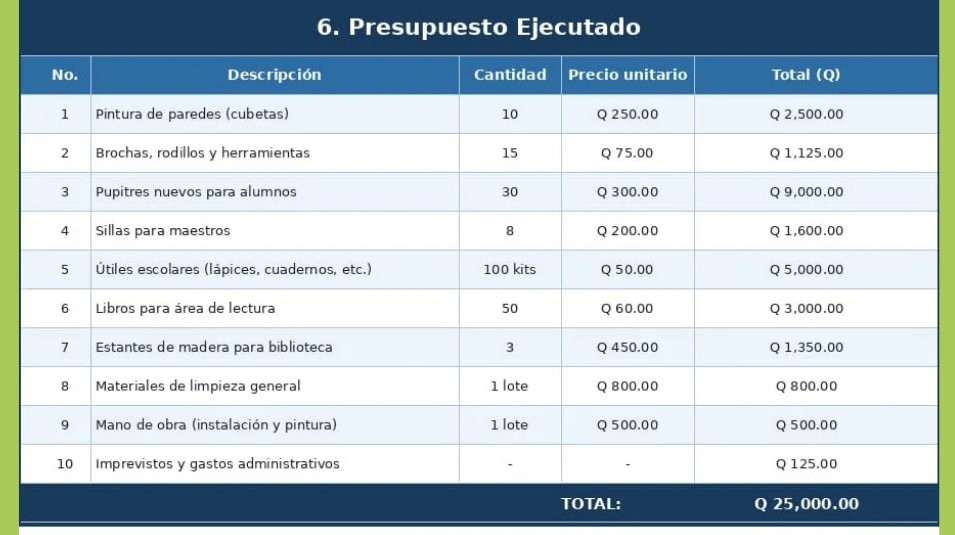

Proyecto: Manos que Transforman
El curso de Desarrollo Humano y Profesional permitió trabajar aspectos relacionados con el crecimiento personal, la responsabilidad social, el trabajo en equipo y la formación de valores dentro del contexto universitario. Esta asignatura no se enfocó únicamente en conocimientos teóricos, sino también en la forma en que una persona puede desarrollarse de manera integral dentro de su vida académica, social y profesional.
A través de este curso se comprendió que el desarrollo humano es importante para formar profesionales más conscientes, responsables y capaces de aportar positivamente a su entorno. En el área de Ingeniería en Sistemas, no basta solamente con aprender tecnología; también es necesario fortalecer habilidades humanas como la comunicación, la empatía, la organización, la responsabilidad y el liderazgo.
El proyecto desarrollado en esta asignatura se llamó "Manos que Transforman". Fue un proyecto grupal basado en la creación de una causa benéfica ficticia, orientada a mejorar las condiciones educativas y sociales de personas que necesitan apoyo, especialmente estudiantes y comunidades con recursos limitados.
La idea principal fue simular una organización social real. Para ello, el grupo trabajó en la creación de una misión, visión, objetivos, metas, estrategias, justificación, cronograma de actividades y presupuesto. Todo esto permitió que la propuesta tuviera una estructura más formal y organizada.
Entre las acciones propuestas se encontraban actividades relacionadas con la mejora de espacios educativos, apoyo comunitario, entrega de recursos básicos y fortalecimiento del bienestar de los beneficiados. El propósito era representar cómo una iniciativa social puede planificarse de forma seria, ordenada y realista.
Tipo de proyecto: Grupal.
Integrantes: David Eduardo Muñoz Figueroa, Samuel Alejandro Calderón Arriaga, Christian Ricardo Chavac Portillo, Joshua Daniel Herrera de Paz y Rene Alfredo López Castellanos.
El trabajo en equipo fue una parte esencial del proyecto, ya que permitió distribuir responsabilidades, compartir ideas y construir una propuesta más completa. Cada integrante aportó desde sus habilidades para lograr que el proyecto tuviera una presentación clara y coherente.
El objetivo principal fue crear una propuesta benéfica organizada que permitiera mejorar la calidad educativa y social de personas necesitadas, promoviendo el trabajo en equipo, la responsabilidad, el liderazgo y la empatía.
También se buscó reflexionar sobre la importancia de apoyar a los demás desde una visión humana y profesional. El proyecto permitió comprender que una iniciativa social necesita compromiso, planificación y una estructura clara para poder tener impacto.
Para desarrollar el proyecto primero se definió la idea central de la causa benéfica. Después se trabajó en los elementos principales de la organización, como la misión, visión y objetivos. Estos elementos ayudaron a darle identidad al proyecto y a explicar con claridad cuál era su propósito.
Luego se elaboraron metas, estrategias, presupuesto y cronograma. Esta parte fue importante porque permitió representar cómo se llevaría a cabo la ayuda de manera organizada. El presupuesto estimado fue de Q25,000, utilizado como base para simular la ejecución de las actividades propuestas.
Finalmente, se organizó la información en un documento formal y se preparó la presentación del proyecto. Esto permitió practicar la redacción, la organización de ideas y la exposición de una propuesta social.
Este proyecto permitió fortalecer habilidades importantes como el liderazgo, la comunicación, la organización y el trabajo en equipo. También ayudó a desarrollar una mejor capacidad para establecer objetivos claros, crear estrategias y administrar actividades dentro de un grupo.
Además, el proyecto permitió comprender la importancia de los valores, la empatía y la responsabilidad social. Aprendí que un proyecto no solo debe cumplir con una tarea académica, sino que también puede representar una forma de reflexionar sobre las necesidades de otras personas.
Otro aprendizaje importante fue reconocer que el trabajo grupal requiere compromiso y comunicación. Para que una propuesta avance correctamente, cada integrante debe cumplir con su parte y mantener una actitud responsable.
Durante este proyecto se desarrollaron habilidades como organización, planificación, comunicación, responsabilidad, redacción de objetivos, trabajo en equipo, liderazgo desde el rol asignado y pensamiento social.
Estas habilidades son importantes para la carrera porque un ingeniero en sistemas también necesita saber trabajar con otras personas, presentar ideas, organizar proyectos y comprender el impacto que la tecnología o cualquier propuesta puede tener en la sociedad.
Las siguientes imágenes muestran evidencias del trabajo realizado durante el proyecto, incluyendo partes de la documentación, organización y presentación.



En el siguiente video se explica el proyecto "Manos que Transforman", su propósito, la organización del equipo y los aprendizajes obtenidos durante el desarrollo de la actividad.
El proyecto de Desarrollo Humano y Profesional permitió comprender que el crecimiento académico también debe estar acompañado de valores, empatía y responsabilidad social. A través de "Manos que Transforman" se trabajó una propuesta organizada que ayudó a reforzar la importancia de apoyar a otros y de planificar correctamente una iniciativa.
Esta experiencia dejó como aprendizaje que los proyectos sociales requieren orden, compromiso y trabajo en equipo. También permitió fortalecer habilidades personales que serán útiles dentro de la carrera y en futuros proyectos profesionales.